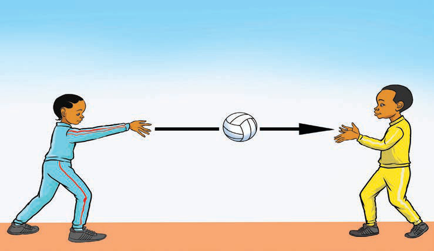

Basic skills in the game of netball
To be able to play netball well, a player must have the basic skills of the game. The essential netball skills include passing, catching, movements, shooting and defending.
(a) Passing
Passing is the act of throwing the ball from one player to another of the same team. Passing accurately is essential for a team to attack quickly and prevent opponents from gaining possession of the ball. The main types of passes are chest pass, bounce pass and high pass.
Chest pass
A chest pass is the throwing of the ball, released from the passer’s chest, directly to the teammate’s chest using both hands. The pass is normally quick, easy and accurate to short distances. To be successful, the player must hold the ball with both hands and place it in front of the chest, then push it powerfully and accurately towards the teammate, as shown in Figure 10.
